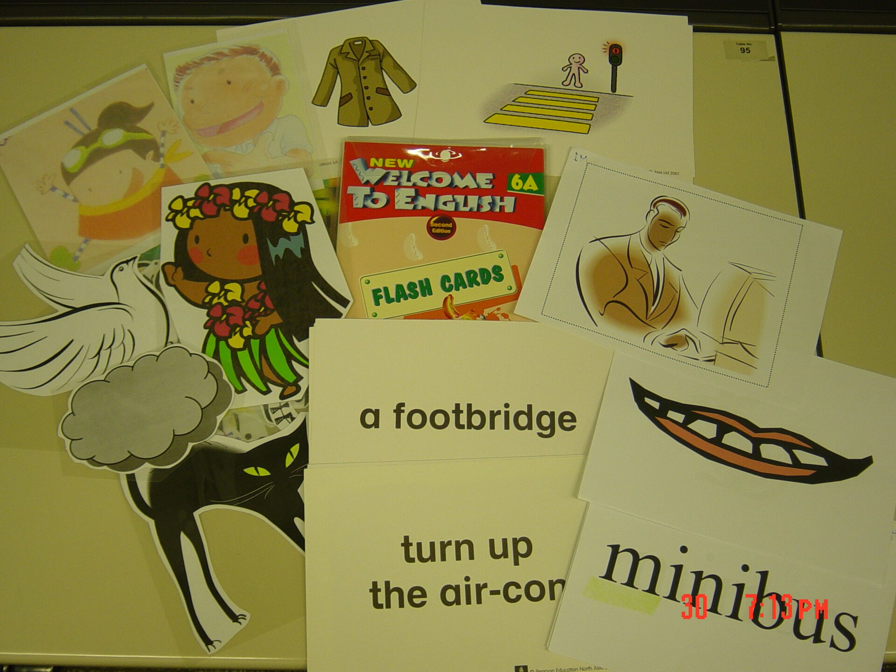
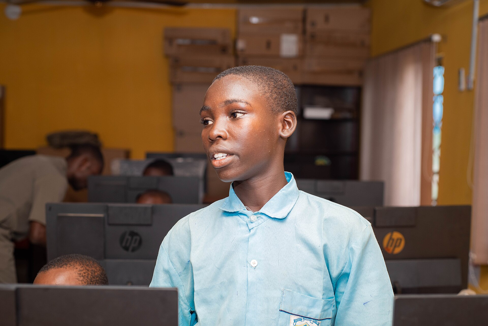

DICAS DE ESTUDO
Memorização que ajuda a aprender
Conheça recuperação ativa, revisão espaçada e associações para lembrar conteúdos entendidos, não apenas repetir palavras.
Introdução
Esquecer parte do que estudamos é normal. A memória se fortalece quando retomamos uma informação em momentos diferentes e tentamos recuperá-la sem olhar as respostas. Antes de memorizar, procure entender o significado; repetir uma frase que não faz sentido costuma ser pouco útil para resolver problemas ou explicar ideias.
1. Recuperação ativa: tente lembrar antes de consultar
Depois de estudar um trecho, feche o material e responda: “Quais são as ideias principais?” Escreva ou explique em voz alta tudo o que lembrar. Só então confira a fonte, corrija lacunas e marque dúvidas. Esse esforço de buscar a informação mostra o que já está firme e o que precisa de outra revisão.
Exemplo: após aprender os estados físicos da água, tente explicar o que ocorre na fusão e na evaporação sem consultar o livro. Em seguida, compare sua explicação com a definição e complete o que faltou.

2. Revisão espaçada
Em vez de revisar tudo várias vezes no mesmo dia, retome o assunto em intervalos. Uma sequência inicial possível é revisar no dia seguinte, alguns dias depois, na semana seguinte e mais adiante. Os intervalos não são uma fórmula fixa: conteúdo difícil pode precisar de retornos mais próximos; conteúdo conhecido pode ser revisto com menos frequência.
Em cada revisão, use perguntas, exercícios ou uma explicação curta. Se não lembrar, consulte o material, entenda a resposta e tente novamente mais tarde. A revisão não precisa ser longa para ser útil.
3. Flashcards e mapas mentais
Um flashcard tem uma pergunta de um lado e uma resposta breve do outro. Por exemplo: “Qual é a função das raízes?” no lado da pergunta e “absorver água e sais minerais e ajudar na fixação” no verso. Tente responder antes de virar o cartão; se a resposta for vaga, refine o cartão para cobrar uma ideia de cada vez.
Um mapa mental organiza um tema central e ramificações com conceitos relacionados. Use palavras-chave, setas e exemplos, mas depois cubra o mapa e tente reconstruí-lo ou explicá-lo. Desenhar um mapa bonito sem recuperar ideias não garante aprendizagem.
4. Associação de ideias
Conecte uma informação nova a algo conhecido: uma imagem, uma situação cotidiana, uma palavra-chave ou uma sequência lógica. Em biologia, pode-se ligar a função de um órgão a um exemplo de atividade do corpo. Em história, relacione acontecimentos por causa, consequência e período, em vez de decorar números isolados.
Associações são pistas para lembrar, não substitutos da compreensão. Verifique se a analogia preserva o sentido do conteúdo e anote os limites quando ela simplificar demais.

5. Exemplos: fórmulas matemáticas e datas históricas
Para lembrar a área do retângulo, associe a fórmula A = base × altura à ideia de contar quantas unidades quadradas cabem na figura. Por exemplo, com base de 5 cm e altura de 3 cm, A = 5 × 3 = 15 cm². Memorizar a fórmula sem saber o que representam as medidas dificulta perceber quando ela se aplica.
Para datas históricas, coloque os acontecimentos em uma linha do tempo e relacione cada data ao fato, ao contexto e ao que veio antes ou depois. Crie cartões com perguntas como “Que mudança ocorreu neste período?” em vez de apenas “Qual é a data?”. Assim, a lembrança fica ligada ao significado.
6. Como evitar esquecer conteúdos
- Distribua revisões ao longo dos dias e misture lembrança com exercícios.
- Durma e faça pausas; estudar exausto reduz a qualidade do trabalho.
- Transforme títulos em perguntas e responda sem olhar as anotações.
- Priorize conceitos e relações, não a cópia repetida de páginas inteiras.
- Registre erros e volte às perguntas que ainda não consegue explicar.
Erros comuns
Reler muitas vezes achando que familiaridade significa saber; criar cartões com respostas longas demais; revisar apenas na véspera; e tentar decorar um procedimento sem entender quando usá-lo. Ajuste cada estratégia ao tipo de conteúdo.
Resumo
Entenda primeiro, tente recordar sem consulta, confira lacunas e retome o assunto em intervalos. Flashcards, mapas e associações ajudam quando levam você a recuperar e explicar as ideias.
Conclusão
Escolha uma matéria desta semana e faça uma revisão curta com perguntas feitas por você. Aos poucos, perceberá que lembrar também é uma prática. Não precisa acertar tudo de primeira: cada tentativa mostra qual é o próximo passo.